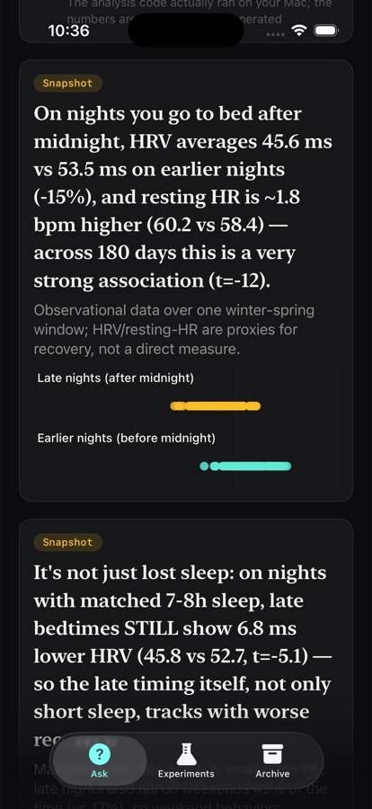
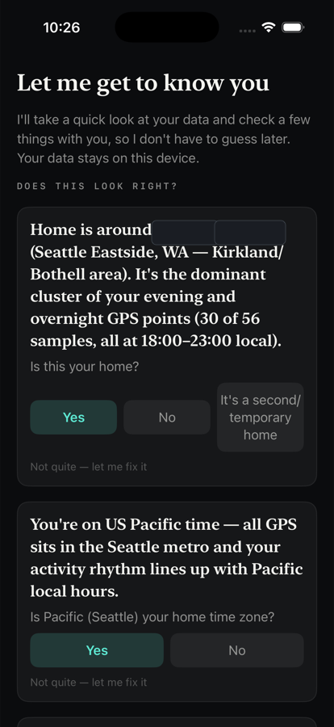
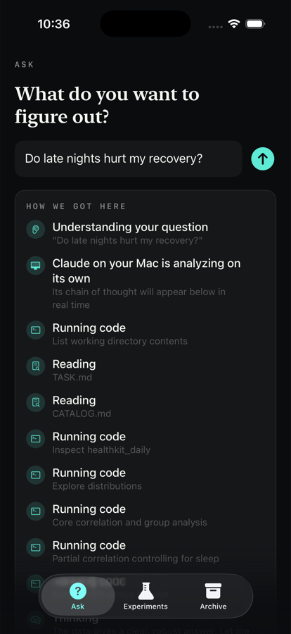
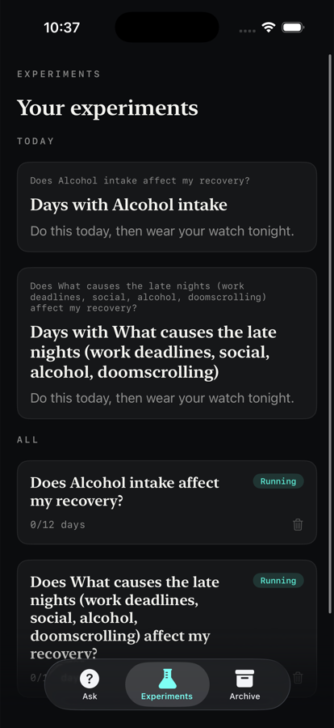
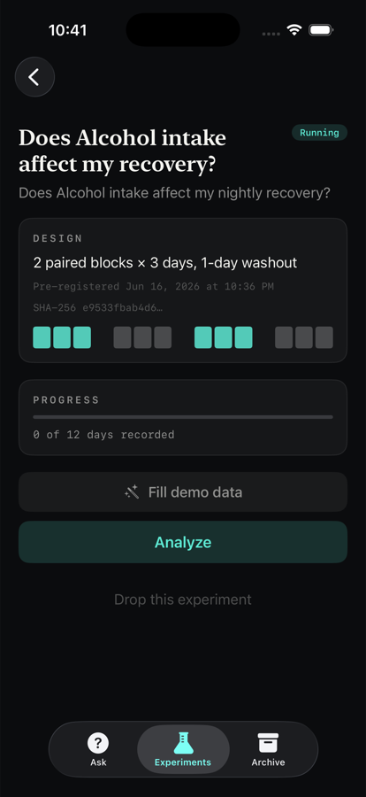

01
Numbers from code, not the model.
Statistics come from deterministic, open-source code — the N1Stats engine and the agent’s own scripts. The LLM orchestrates and explains; it is never the source of a number.
N1 · quantified-self, done honestly
Ask a plain-language question about your health. An AI analyst investigates your data, on your machine, shows its work — and helps you run a real experiment to confirm cause.
Local-first·Open source (MIT)·Not medical advice


01 Ground truth
No forms. On first run N1 reads your Apple Health history and proposes the ground truth it inferred — your home, time zone, work pattern, and physiological baselines — for you to confirm or correct.
Whatever you confirm becomes durable context the agent reuses, so it never has to guess, or re-ask, again.
“Home is around ≈47, −122 (the Seattle area) … the dominant cluster of your evening and overnight GPS points (30 of 56 samples). Is this your home?”

02 Investigation
The agent decides what to look at, writes and runs real analysis code, and streams every step so you can see how it got there. Every number comes from code it actually ran — the open-source stats engine and its own scripts. The model narrates; it never invents a figure.
“On nights you go to bed after midnight, HRV averages 45.6 ms vs 53.5 ms on earlier nights (−15%) … a very strong association (t = −12).”
And it volunteers its own limits — “matched-sleep late group is smaller (n = 18); late nights also fall on weekends 42% of the time, so weekend behaviors may ride along.”


03 Confirm cause
When the honest answer needs something your sensors can’t capture, N1 says so and offers to find out for real.
“Your watch can’t see alcohol intake. Late nights often pair with drinking, which sharply lowers HRV — log it to rule it out as the real driver.”
That spins up a proper N-of-1 experiment: a pre-registered, randomized crossover with paired blocks and washout, locked with a SHA-256 of the spec — plus self-report logging for the things sensors miss. Run several at once; when enough days are in, N1 analyzes it with a within-person Bayesian model and gives an effect size with honest uncertainty.
Architecture
Statistics come from deterministic, open-source code — the N1Stats engine and the agent’s own scripts. The LLM orchestrates and explains; it is never the source of a number.
An iOS app talks to a local backend on your Mac over Tailscale (or LAN). It returns a job id instantly and the app polls — so backgrounding your phone can’t interrupt an analysis.
The agent’s methodology lives in handbook.md, reloaded per request — not hardcoded. Tune how your data scientist thinks without touching the code.
Privacy